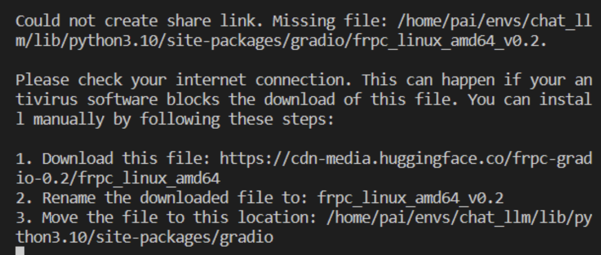

阿里云中无法使用gradio的问题
今天在做基于chatglm3的聊天机器人部署时，遇到以下问题：
- 阿里云上无法生成本地可用的地址，gradio构建的界面排版错乱、无法使用。（如下图，对话无法发出）
解决方案是直接生成外部访问链接，具体如下：
将launch()的share参数改为True后运行，此时应该会因缺少frpc内网穿透插件而报错： 根据报错中提供的地址下载文件。这里使用windowns下载可能出错，需要进行以下设置：
- 打开注册表，定位到**HKEY_LOCAL_MACHINE*，将ScanWithAntiVirus 属性的值修改为1。
- 重启电脑。
下载文件并重命名为
frpc_linux_amd64_v0.2。根据报错中的提示将文件上传至阿里云。
重新运行代码，即可生成可用链接。